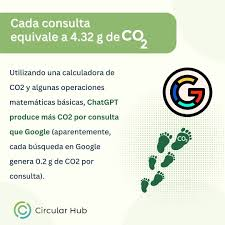
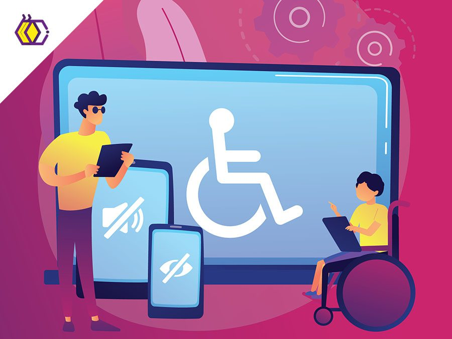
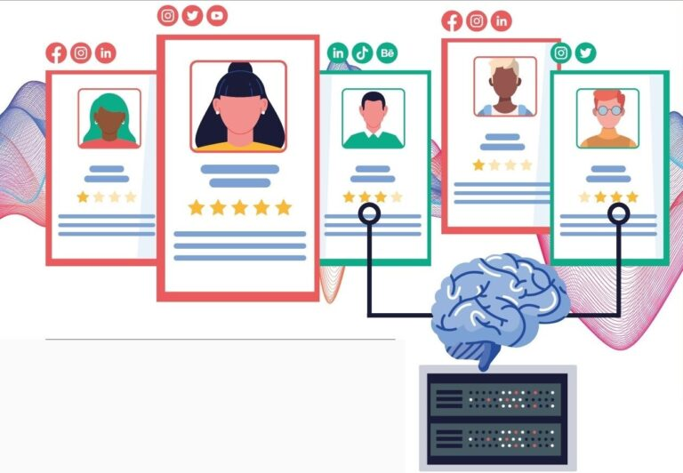
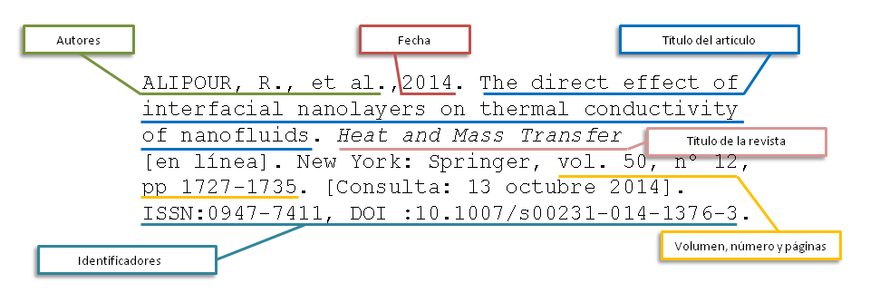
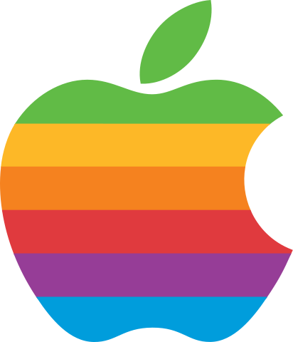
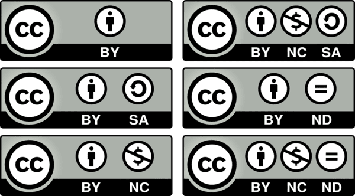
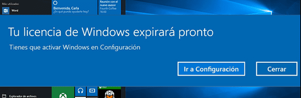

Sostenibilidad, inclusión y ética en el desarrollo de software¶
Sostenibilidad, inclusión y ética en el desarrollo de software¶
Cuando desarrollamos software, no basta con que funcione: también debemos pensar en cómo afecta a las personas, al entorno y a la sociedad. La industria del software tiene un impacto social y ambiental importante, por lo que los desarrolladores tienen responsabilidades éticas.
Sostenibilidad en el software¶
La sostenibilidad significa usar los recursos de forma eficiente y reducir el impacto ambiental del software.
- Optimización del código: programas más eficientes usan menos memoria y energía.
- Aplicaciones ligeras: reducir el tamaño de la app para que funcione en dispositivos antiguos y consuma menos datos.
- Uso responsable de servidores y bases de datos: minimizar consultas innecesarias y aprovechar servicios en la nube eficientes.
- Actualizaciones conscientes: evitar cambios frecuentes que obliguen a descargas pesadas innecesarias.
Ejemplo
Una app de gestión de tareas que guarda solo los datos necesarios y evita consultas constantes a la nube es más eficiente y sostenible.

Inclusión en el software¶
La inclusión significa hacer aplicaciones accesibles para todas las personas, independientemente de sus capacidades o situación.
- Accesibilidad visual: permitir cambios de tamaño de letra, alto contraste o compatibilidad con lectores de pantalla.
- Accesibilidad auditiva: subtítulos, descripciones de audio o alertas visuales.
- Accesibilidad motriz: facilitar el uso con teclado o dispositivos adaptativos.
- Diseño inclusivo: interfaz intuitiva, lenguaje claro y opciones de personalización.
Ejemplo
Una app educativa que permite cambiar colores, aumentar tamaño de texto y usar voz para leer instrucciones facilita su uso a estudiantes con discapacidades.

Responsabilidad ética¶
Los desarrolladores deben respetar derechos, privacidad y transparencia.
-
Privacidad de datos: consiste en proteger la información personal de los usuarios frente a usos indebidos o no autorizados. El GDPR (Reglamento General de Protección de Datos de la UE) establece que las empresas deben:
- Informar de manera clara qué datos recopilan y con qué finalidad.
- Obtener el consentimiento explícito del usuario antes de recolectar datos.
- Permitir que los usuarios accedan, corrijan o eliminen sus datos personales.
- Garantizar medidas de seguridad que eviten filtraciones o robos de información.
- Cumplir estas normas no solo es obligatorio en Europa, sino que también genera confianza y protege a los usuarios de posibles riesgos legales y de privacidad.
-
Evitar sesgos en algoritmos: significa diseñar programas que no discriminen a ningún grupo social, como por género, edad, etnia o capacidades. Los sesgos aparecen, por ejemplo, cuando un algoritmo de inteligencia artificial se entrena con datos históricos que reflejan desigualdades existentes. Para prevenirlos:
- Los datos de entrenamiento deben ser diversos y representativos de toda la población.
- Se deben aplicar métricas de equidad y tests de sesgo antes de poner un algoritmo en funcionamiento.
Esto garantiza que las decisiones automáticas, como recomendaciones, aprobaciones de crédito o diagnósticos médicos, sean justas e imparciales para todos los usuarios.
Ejemplo
Una app de recursos humanos debe tener criterios de selección justos e imparciales para todos los usuarios.

-
Transparencia: explicar de manera clara cómo funciona el software y cómo se recopilan y usan los datos de los usuarios. Esto permite que las personas entiendan qué ocurre con su información y tomen decisiones informadas.
-
Propiedad intelectual: usar y compartir contenido respetando los derechos de autor y las licencias adecuadas. Esto incluye no copiar código ni obras de otros sin permiso, y comprender los acuerdos que permiten utilizar legalmente las creaciones.
La propiedad intelectual protege diferentes tipos de creaciones:
- Derechos de autor: protegen automáticamente obras literarias, artísticas o de software desde el momento de su creación. Por ejemplo, un poema, una canción o un programa de ordenador ya están protegidos sin necesidad de registro.

Derechos autor - Marcas registradas: protegen nombres, logos o slogans que identifican productos o servicios, como el logo de Apple o el eslogan «Just Do It» de Nike.

Marcas registradas - Licencias: son acuerdos que permiten a otros usar obras protegidas bajo condiciones específicas. Por ejemplo, al comprar software, adquieres una licencia de uso, no la propiedad del programa. Las licencias Creative Commons permiten compartir fotos, música o textos respetando ciertos requisitos, como atribución al autor o prohibición de uso comercial.

Licencias creativas Las aplicaciones pueden tener distintas licencias de distribución como ser código abierto, freeware, shareware, trialware, etc.
Propietaria Opensource Freeware Shareware Qué es Las licencias propietarias son las más comunes en el software comercial. Establecen que el software es propiedad de la empresa que lo creó y limitan la forma en que los usuarios pueden usarlo, generalmente prohibiendo la modificación, copia o redistribución. Las licencias de código abierto permiten a los usuarios acceder, modificar y redistribuir el código fuente del software. Fomentan la colaboración y el desarrollo comunitario. Sin embargo, cada licencia de código abierto tiene sus propias reglas; algunas pueden requerir que las modificaciones también se distribuyan de forma abierta. El freeware es software que se ofrece de forma gratuita, pero a diferencia del software de código abierto, no necesariamente permite la modificación o redistribución de su código fuente. El shareware permite a los usuarios probar el software de forma gratuita durante un período limitado antes de comprar la versión completa. Es una forma de ofrecer una demostración del software antes de la compra. Cuándo se usa Se utilizan principalmente en software comercial, donde la empresa busca proteger su propiedad intelectual y generar ingresos a través de la venta o suscripción del software. Son comunes en proyectos que buscan promover la innovación colaborativa y la transparencia, permitiendo a cualquier usuario contribuir al desarrollo y mejora del software. Generalmente se utilizan para software que busca una amplia distribución sin coste para el usuario, pero donde el autor retiene todos los derechos de propiedad intelectual. Utilizado por desarrolladores que quieren que los usuarios prueben el software antes de comprometerse a comprarlo. Ejemplos Microsoft Office: un conjunto de aplicaciones de productividad que incluye Word, Excel y PowerPoint.
Adobe Photoshop: un programa avanzado de edición de imágenes y gráficos utilizado profesionalmente en diseño y fotografía.Linux: un sistema operativo ampliamente utilizado en servidores y sistemas integrados. Hay varias distribuciones, como Ubuntu o Fedora.
Mozilla Firefox: un navegador web popular conocido por su enfoque en la privacidad y la personalización.Skype: una aplicación de comunicación para videollamadas y mensajes.
Adobe Acrobat Reader: un lector de PDF utilizado para abrir, visualizar e imprimir archivos PDF.WinRAR: un programa para comprimir y descomprimir archivos.
Malwarebytes: Este es un software de seguridad que ofrece una versión de prueba gratuita y avanzada para la detección y eliminación de malware. Después de un período de prueba, los usuarios pueden optar por comprar la versión completa para mantener el acceso a todas las funcionalidades.Estas regulaciones tienen aplicaciones prácticas en todos los aspectos de nuestra vida:
-
En el ámbito académico, por ejemplo, es fundamental citar correctamente las fuentes y respetar los derechos de autor para evitar el plagio.
-
En el ámbito profesional, las empresas deben asegurarse de que utilizan materiales debidamente licenciados, como software o imágenes para campañas publicitarias, para evitar violaciones legales que pueden conllevar sanciones graves.

Licencia Windows -
Incluso en nuestra vida personal, la forma en que descargamos y compartimos contenido, como música o películas, debe respetar las leyes de propiedad intelectual para apoyar a los creadores y permitir que continúen desarrollando nuevas obras.
Ejemplo
Respetar la propiedad intelectual y hacer un uso correcto de las licencias nos ayuda a evitar problemas legales, al mismo tiempo que favorece la innovación, beneficiando a toda la sociedad.
Referencias¶
Actividades¶
📝 AA4.3 Industria del desarrollo del software¶
(C.ESP1 / CE1.4 / IC1-3p)
Imagina que eres parte del equipo de desarrollo de una nueva aplicación educativa para estudiantes de secundaria. Antes de empezar a programar, debes reflexionar sobre el impacto social, ambiental y ético de tu aplicación.
-
Sostenibilidad
- Describe al menos dos decisiones técnicas que podrías tomar para que la aplicación sea más eficiente en consumo de recursos (por ejemplo, optimización de código, tamaño de la app, uso de energía).
- Explica cómo estas decisiones contribuyen a un consumo responsable de software.
-
Inclusión
- Identifica dos características o funcionalidades que permitan que la aplicación sea accesible para todos los estudiantes, incluyendo personas con discapacidad visual, auditiva o motriz.
- Justifica por qué estas medidas promueven la equidad y la inclusión digital.
-
Responsabilidad ética
- Reflexiona sobre cómo asegurarías el respeto a la propiedad intelectual, el uso responsable de datos y la transparencia en algoritmos.
- Describe al menos una acción concreta que tu equipo podría tomar para evitar sesgos o discriminación en la aplicación.
📝 AA4.4 Licencias de software¶
(C.ESP1 / CE1.4 / IC1-3p)
- Explica con tus palabras, por qué es importante respetar las licencias y cómo el uso responsable de estos recursos beneficia tanto a los creadores como a los usuarios.
- El software puede ser freeware, shareware o trialware. ¿En qué consiste cada una de estas modalidades?
-
Busca en internet el nombre de un programa freeware, shareware y trialware que sirva para…
- Navegar por Internet
- Retocar una foto
- Hacer un dibujo técnico